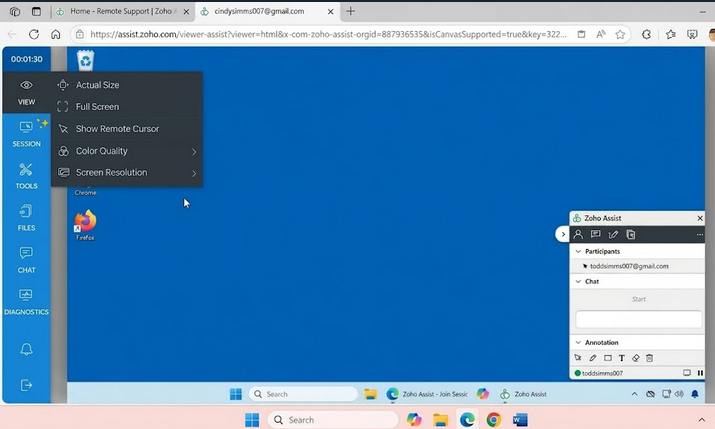
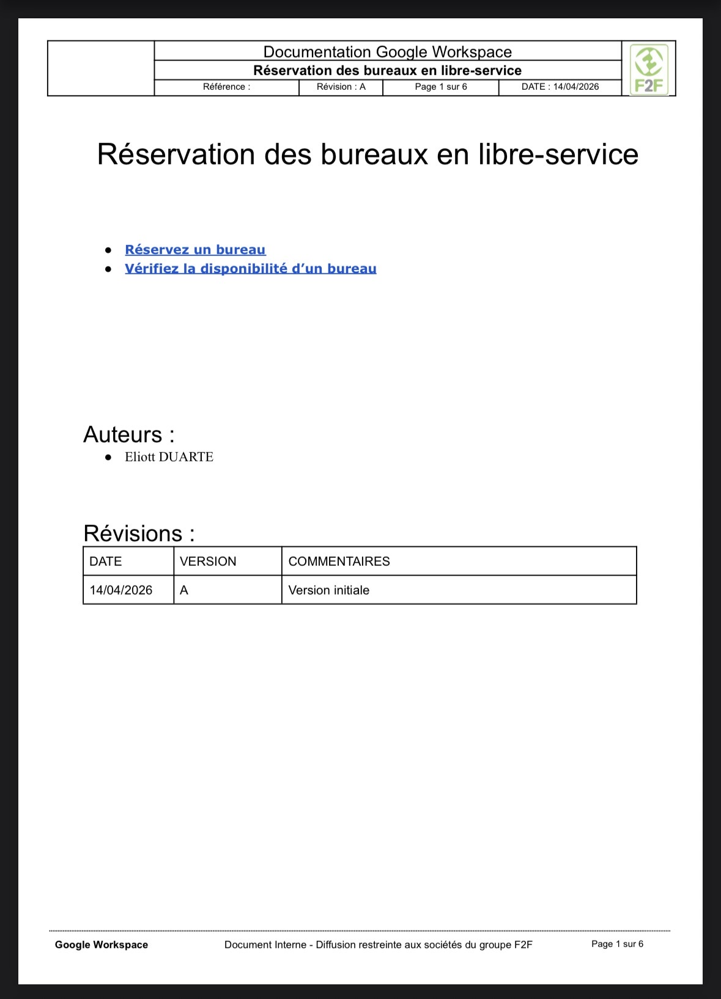
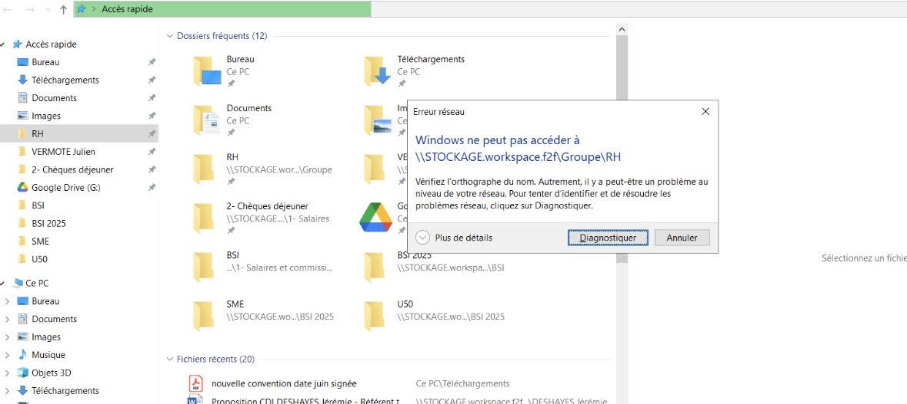

Support Infrastructure
1. Contexte et objectifs
L'objectif est de proposer un support continu et le plus disponible possible à l'ensemble des utilisateurs du groupe, sur tout type de problématique. C'est une mission transverse, présente tout au long de l'alternance, qui constitue le cœur de mon activité quotidienne au sein du pôle Infrastructure.
Acteurs impliqués : utilisateurs du groupe (toutes les filiales confondues), équipe SI.
Contraintes : maintenir un service le plus disponible possible, gérer les urgences sans interrompre les tâches de fond, et composer avec un parc hétérogène aux spécifications variées.
2. Tâches réalisées et évolution
Mon activité de support se répartit en deux grandes familles de sollicitations suivies via le système de tickets : les dysfonctionnements (incidents qui empêchent ou dégradent un usage) et les demandes (requêtes de service planifiables). Cette distinction permet de prioriser : un incident bloquant passe avant une demande courante.
- Dysfonctionnements bloquants : incidents qui empêchent l'utilisateur de travailler : PC qui ne démarre plus, problème d'affichage, plantage des mini-PC en usine. Traités en priorité.
- Dysfonctionnements non bloquants : incidents qui dégradent le confort sans bloquer l'activité : problème sur une imprimante, lenteurs sur le poste ou les applications, logiciel qui plante ponctuellement.
- Demandes (requêtes de service) : installation d'un logiciel, création de compte / d'accès, ajout d'un périphérique, accès aux drives partagés.
Évolution : au début, je traitais surtout les demandes simples et les incidents non bloquants sous la supervision de mon tuteur. J'ai progressivement gagné en autonomie sur le diagnostic des incidents bloquants et sur les tâches de fond de gestion de parc.
3. Compétences et apprentissages critiques mobilisés
Cette mission, transverse et continue, mobilise principalement les compétences RT1 (administration des réseaux) et RT2 (relation aux usagers) du référentiel.
RT1 Administrer les réseaux et l'Internet
Justification : le diagnostic des incidents (AC11.05), la maîtrise des systèmes d'exploitation Windows (AC11.04), les petites configurations réseau (AC11.03) et la préparation/installation des postes lors de la migration (AC11.06) constituent mon quotidien dans un environnement de production.
RT2 Connecter les entreprises et les usagers
Justification : le support exige d'adapter mon discours technique à des utilisateurs de profils variés — administratifs, terrain, direction — (AC12.05), et l'ajout de périphériques ou le raccordement des postes me fait manipuler les supports de transmission (AC12.03).
4. Analyse réflexive et autoévaluation
Ce que j'ai appris : j'ai développé mon sens du relationnel et compris l'importance de la communication et de la pédagogie avec les utilisateurs. J'ai également appris à distinguer un incident d'une demande, à qualifier la gravité d'un dysfonctionnement (bloquant / non bloquant).
Difficultés rencontrées : la gestion des priorités a été un défi majeur, notamment pour concilier le support quotidien (souvent urgent) avec les tâches de fond comme la migration des OS. J'ai également dû faire face à diverses problématiques de compatibilité matérielle et logicielle, par exemple le prérequis TPM 2.0 pour Windows 11.
Comment je les ai surmontées : j'ai appris à hiérarchiser les tickets selon leur caractère bloquant ou non, à traiter les incidents critiques en priorité tout en réservant des plages pour les tâches de fond, et à échanger régulièrement avec mon tuteur pour valider et monter en compétence sur les cas que je ne maîtrisais pas encore.
Positionnement personnel : je suis aujourd'hui capable de diagnostiquer rapidement des pannes variées sur les postes de travail et d'accompagner sereinement les utilisateurs.
5. Traces et preuves
Illustrations sélectionnées de mes interventions quotidiennes de support et de gestion de parc. Chaque trace a été retenue parce qu'elle illustre concrètement une compétence du référentiel.

1. Suivi et résolution d'un ticket (Odoo). Gestion des incidents et des demandes via le module de ticketing d'Odoo. Illustre AC11.05 (identifier et signaler les dysfonctionnements) et AC12.05 (communication avec l'utilisateur).

2. Prise en main à distance (Zoho Assist). Assistance d'un utilisateur à distance pour diagnostiquer et résoudre un incident. Illustre AC11.04 (maîtrise des systèmes d'exploitation) et AC12.05 (communication et assistance à l'utilisateur).

3. Rédaction d'une documentation. Création d'une procédure interne pour l'ajout d'une fonctionnalité, afin de capitaliser et partager la connaissance au sein de l'équipe. Illustre AC11.06 (installer un poste client, expliquer la procédure) et AC12.05 (communication et vulgarisation).

4. Diagnostic d'un dysfonctionnement. Intervention sur un incident matériel/logiciel d'un poste de travail. Illustre AC11.05 (identifier et signaler les dysfonctionnements) et AC11.04 (maîtrise des systèmes d'exploitation).